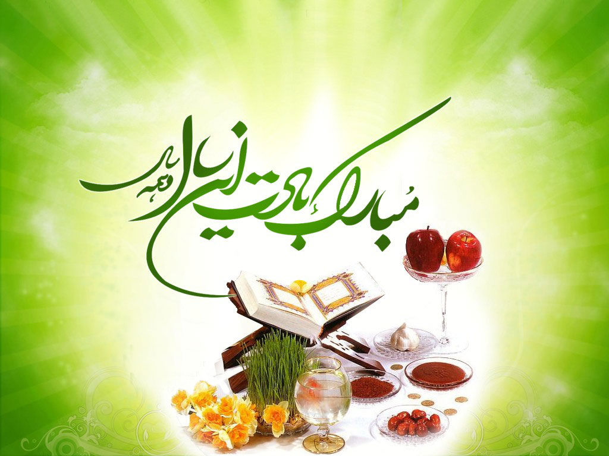

سال نو مبارک...

عید امسال پر از بوی گل یاس شده است
و پر از خاطره ی گندم و دستاس شده است...
همه دشت گواهند که با بوی بهار
عطر یک خانه ی آتش زده احساس شده است...
چینش سفره امسال تفاوت دارد
سین هر سفره سلامی است که بر یاس شده است...
روضه چادر خاکی همه جا پیچیده
سیب ها هم طعم خوش کوثر و اخلاص شده است...
ابر در هیات یک مستمع مداحی است
بس که میگرید و دل نازک شده است...
جان گل های جهان پیشکش یاسی که
زخمی سیلی باد و ستم داس شده است...
السلام علیک یا فاطمه الزهرا.س.
نوشته شده در...
روز: شنبه1فروردین 94 ساعت:2AM توسط: ناهید بهجتی
وقتی مطلب جدولی نداشته باشیم...
| شماره دانشجویی | نام | نام خانوادگی | سن | |
|---|---|---|---|---|
| 89101729 | ناهید | بهجتی | 22 | |
| 94101729 | امید | بهجتی | 18 | |
| 84101729 | حمید | بهجتی | 28 | |
نوشته شده در...
روز: شنبه8فروردین 94 ساعت: 5pm توسط: ناهید بهجتی
یادگیری لهجه اصفهانی در سه دقیقه!!(تضمینی)
- مضاف و موصوف همیشه «ی» میگیرند.
- دری باغ
- گلی قشنگ
- آدمی خوب
- «د» ماقبل ساکن تبدیل به «ت» میشود.
- پرایت
- آرت
- واو ساکن آخر کلمه به «ب» قلب میشود.
- گاب
- اصولا در هر کجا که فتحه قشنگ باشد کسره و هرکجا کسره کلمه را زیبا میکند فتحه به کار میرود.
- حَیف
- فَشار
- جمعَه
- صدای «اُ» هیچ جایگاهی نداشته و به «آ» تبدیل میشود.
- شوما
- کوجا
- چادور
- حرف «و» در قالب حرف ربطی، به «آ» تبدیل میشود.
- منا تو آ حسن
- اصولا خود «آ» به عنوان یک حرف ربط به کار میرود.
- من هستم آ بابامم هسن
- حرف «ه» در این لهجه به کلی نابود شده است.
نوشته شده در...
روز: شنبه8فروردین 94 ساعت: 5pm توسط: ناهید بهجتی